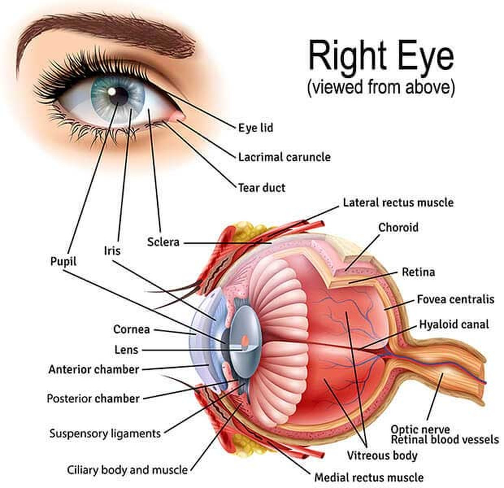

Episode 01 video
Paste the YouTube embed iframe here.
Episode 0142 min
“We are treating the eye's length, not the prescription.”
[Two sentences on what this interview covers and the one thing a parent should take away from it.]
A student project · Guangzhou → United States
In China, slowing childhood myopia has become everyday clinical practice — daylight hours written into the school schedule, axial length measured before the prescription changes, treatment started at age seven instead of seventeen. Most American families have never been told any of it. We are three students bringing that knowledge across, in plain English, straight from the doctors who practise it.
Read our story~50%
of the world's population is projected to be myopic by 2050, with a tenth at high myopia.
Holden et al., Ophthalmology (2016) — verify before publishing
42%
of Americans aged 12–54 were myopic in the 2000s, up from 25% in the early 1970s.
Vitale et al., Arch Ophthalmol (2009) — verify before publishing
39.5 → 30.4%
Three-year myopia onset fell this much when Guangzhou schools added 40 minutes of outdoor class time a day.
He et al., JAMA (2015) — verify before publishing
Our mission
To carry proven myopia-prevention practice from China to American families — clearly, honestly, and early enough to matter for a child's eyes.
Myopia control in China is not experimental. It is a national programme with measurement standards, school policy and a clinical routine that parents understand. In the United States, a child's first pair of glasses is still often the end of the conversation instead of the start of one.
Founder photo
Douglas, ideally in his mother's clinic or wearing his own glasses. 1200 × 675 px.
Featured interview
Featured video
Paste the YouTube or Vimeo embed here. Keep it 16:9.
Dr. [Full Name], [title] at [hospital], explains why axial length is the number that matters, when to start treatment, and the question she wishes every parent would ask at the first appointment.
Watch interviewsExplore
Section image
1200 × 675 px
What myopia actually is, how the eye works, what raises a child's risk, and where prevention begins.
Four chaptersSection image
1200 × 675 px
Unedited conversations with ophthalmologists who treat childhood myopia every day, plus their profiles.
Two partsSection image
1200 × 675 px
Three students, three reasons for starting this, and what each of us is responsible for.
Two partsWe are students, not doctors. Everything here is educational. Nothing on this site diagnoses a condition or replaces an eye exam — talk to a licensed optometrist or ophthalmologist about your child.
Our Team
We each arrived at the same question from a different direction — a family clinic, a pair of glasses that kept getting thicker, and a younger sibling we would rather not see repeat it.
How each of us ended up caring about a condition most people treat as a minor inconvenience.
Douglas — story photo
Portrait, 900 × 1125 px. A childhood photo with glasses works well.
My mother is a myopia specialist. I grew up in her waiting room, and I still became myopic at eight. What I remember is not the diagnosis — it is watching the same conversation happen at her desk a hundred times: a parent surprised, a child already at −3.00, and a year of eye growth that nobody had been watching.
[Replace with your own 150–250 words. Concrete beats general: the first pair of glasses, the whiteboard you couldn't read, the first time your mother explained axial length, the moment you realised American friends had never heard any of this.]
[Close with the turn — what made this a project rather than a private frustration.]
[Teammate 2] — story photo
Portrait, 900 × 1125 px.
[150–250 words in their own voice. What is their connection to myopia — their own eyes, a sibling, a grandparent who lost vision to high myopia, a school where every classmate wore glasses?]
[What do they bring to the project — research, filming, translation, outreach to schools?]
[Teammate 3] — story photo
Portrait, 900 × 1125 px.
[150–250 words. Same structure as above — the personal entry point, then the work they do here.]
Who we are, what each of us does, and how to reach us.
Headshot — Douglas
Square, 800 × 800 px. Same background for all three.
[60–90 words. School and grade, what you handle on the project, your connection to myopia in one line, and one detail that makes you a person — the sport, the instrument, the hometown.]
Headshot — [Teammate 2]
Square, 800 × 800 px.
[60–90 words, same shape as Douglas's profile so the three read as a set.]
Headshot — [Teammate 3]
Square, 800 × 800 px.
[60–90 words.]
Advisors, if you have them. If your mother or any clinician is willing to be listed as a medical advisor, add a fourth card here — it is the fastest way to raise a student project's credibility. Name, credentials, affiliation, one line on their role.
Understanding Myopia
What myopia is, how the eye produces it, what makes it more likely, and where prevention starts.
Myopia — nearsightedness — is a focusing error caused by shape. In a myopic eye, the distance from the front of the eye to the retina is too long for the eye's own focusing power. Light from far away comes to a point before it reaches the retina, so distant things blur while close things stay sharp.
That distance has a name: axial length. It is measured in millimetres, it grows as a child grows, and in myopia it grows too fast. This is why glasses do not fix the problem — they move the focus back onto the retina, but the eye underneath keeps lengthening.
It also explains why myopia is a health question rather than a convenience question. A longer eye is a stretched eye, and high myopia raises lifetime risk of retinal detachment, myopic maculopathy, glaucoma and early cataract. [Add the specific risk figures you want to cite, with sources.]
[Optional paragraph: the difference between a child's myopia and an adult's, and why the years between roughly 6 and 14 are when the eye is most changeable.]
Optional: prescription or biometry photo
A real (anonymised) axial-length printout makes this concrete. 1200 × 675 px.

[Two or three sentences: together they bend incoming light. The cornea does most of the work; the lens fine-tunes it and changes shape when you look at something close.]
[Two or three sentences: the screen at the back, and the tiny central patch that gives you detail. Focus has to land exactly here.]
[Two or three sentences: the white outer wall, and why its stretching is the mechanism of myopia rather than a side effect.]
Myopia runs in families, but family history alone cannot explain a change this fast in a single generation. Environment does much of the rest.
[The most consistent protective factor in the literature. Explain the light-intensity idea: outdoor light is 10–100× brighter than indoor lighting, and bright light appears to slow eye elongation, possibly through dopamine release in the retina. Cite the Guangzhou and Taiwan school trials.]
[Long unbroken periods of reading, homework or screens at close distance. Distance and duration seem to matter more than the device itself. Note what is still debated.]
[Risk rises with one myopic parent and rises further with two. Genetics sets the slope; environment decides how far along it a child travels.]
[The younger a child becomes myopic, the more years of progression ahead of them — which is why onset age predicts final prescription better than the first prescription does.]
[Shorter sleep, dim study lighting and heavy academic schedules all appear in the research, with weaker or mixed evidence. Say so plainly — the honesty is the point.]
[Reading in the dark, sitting close to the television, carrots, and eye exercises marketed as cures. Correct these directly — parents hear them constantly.]
Optional chart
A simple bar or line chart — myopia prevalence by country, or by hours spent outdoors. 1400 × 790 px.
Two layers: habits any family can start this week, and clinical options that require an eye doctor. Habits first — they are free, and the evidence is cleanest.
[Recess, walking to school, sport, anything outside. Brightness is the active ingredient, not exercise — shade on a bright day still counts.]
[The 20-20-20 habit: every 20 minutes, look at something 20 feet away for 20 seconds. Explain why breaks matter more than total hours.]
[Roughly a forearm's length from the page. Good desk lighting. Sit up — slouching shortens the distance without anyone noticing.]
[How often, and what to ask for — including whether the practice measures axial length, not only refraction.]
[What they are, the concentrations studied, what trials show about slowing progression, and the fact that this is a prescription decision made with a doctor.]
[Rigid lenses worn overnight that reshape the cornea. Note the fitting process and the hygiene requirements.]
[DIMS, HAL and similar designs — glasses that correct distance vision while adding peripheral defocus. Availability differs between China and the US; say where things stand.]
[Daily-wear option with a similar defocus principle. Who tends to be a good candidate.]
None of this is a prescription. Treatment choice depends on a child's age, prescription, axial length and eye health. Bring these names to an eye doctor as questions, not as decisions.
Expert Interviews
We ask practising ophthalmologists the questions parents actually have, record the answers in full, and subtitle them in English. No edits that change meaning.
Every conversation we have filmed. Newest first.
Episode 01 video
Paste the YouTube embed iframe here.
[Two sentences on what this interview covers and the one thing a parent should take away from it.]
Episode 02 video
Paste the embed iframe here.
[Two-sentence summary.]
Episode 03 video
Paste the embed iframe here.
[Two-sentence summary.]
Episode 04 video
Paste the embed iframe here.
[Two-sentence summary.]
Episode 05 video
Paste the embed iframe here.
[Two-sentence summary.]
Duplicate one of these cards for every new episode. Keep the title a quotation — it is what makes people press play.
Suggest an expertThe ophthalmologists and researchers who have given us their time. Credentials listed in full, so readers can check them.
Chief Physician, Cataract Centre
Beijing Tongren Hospital, Capital Medical University
Dr. Zhao has practised ophthalmology for 25 years and operates on the most complex cataract cases — eyes also affected by high myopia, glaucoma or diabetes. He developed the 4L treatment protocol and the reverse pre-chop surgical technique, and has published more than 40 peer-reviewed papers.
Portrait
600 × 750 px
[Title]
[Hospital or University], [City]
[Two or three sentences — what they do, how long they have done it, and the one thing they are known for. Keep it the same length as Dr. Zhao's so the four cards read as a set.]
Portrait
600 × 750 px
[Title]
[Hospital or University], [City]
[Two or three sentences — what they do, how long they have done it, and the one thing they are known for. Keep it the same length as Dr. Zhao's so the four cards read as a set.]
Portrait
600 × 750 px
[Title]
[Hospital or University], [City]
[Two or three sentences — what they do, how long they have done it, and the one thing they are known for. Keep it the same length as Dr. Zhao's so the four cards read as a set.]
Get written permission for every portrait and clip. One short release email per expert, naming the site and how the video will be used, protects the project and reassures the next doctor you ask.
Contact Us
Questions, corrections, an expert we should interview, or a school that wants a presentation — we read everything and answer within a few days.
YouTube — [@channel-handle]
Instagram — [@handle]
WeChat — [ID or QR code]
[City, State / Province]
QR code
WeChat or a link to the interview channel. 600 × 600 px.
We cannot answer medical questions. If you are worried about a child's vision, please see a licensed eye doctor. We are happy to help you think of questions to ask at the appointment.